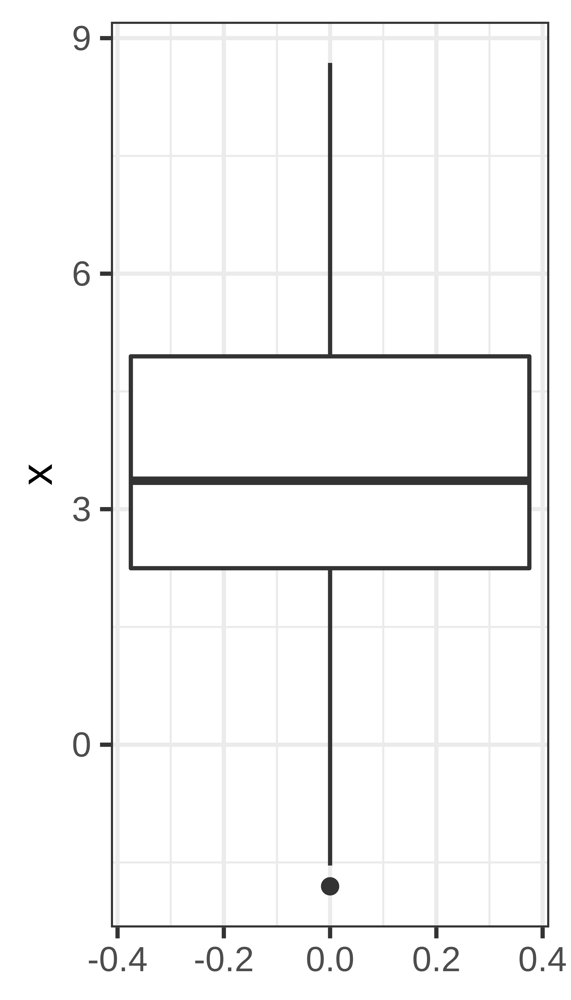

5 Measures of spread
Quartiles - the three values that divide the data values into four equally sized groups.
- Q1. First quartile. 25% of the values are below Q1. Divides the values below the median into equally sized groups.
- Q2.´ Second quartile. 50% of the values are below Q2. Q2 is the median.
- Q3. Third quartile. 75% of the values are below Q3. Divides the values above the median into equally sized groups.

- IQR: interquartile range: Q3 - Q1
- Variance, \(\sigma^2\). The variance is the mean squared distance from the mean value.
- Standard deviation, \(\sigma = \sqrt{\sigma^2}\).
5.1 Variance and standard deviation
The variance of a set of observations is their mean squared distance from the mean value;
\[\sigma^2 = \frac{1}{n} \sum_{i=1}^n (x_i - \bar x)^2.\] the variance is measured in the square of the unit in which \(x\) was measured. a commonly used measured on the same unit as \(x\) is the standard deviation, defined as the square root of the variance;
\[\sigma = \sqrt{\frac{1}{n} \sum_{i=1}^n (x_i - \bar x)^2}\] The denominator \(n\) is commonly replaced by \(n-1\) and the sample standard deviation is calculated instead;
\[s = \sqrt{\frac{1}{n-1} \sum_{i=1}^n (x_i - \bar x)^2}.\] The latter formula is used if we regard the collection of observations \(x_1, \dots, x_n\) as a sample drawn from a large population of possible observations.
I we want to describe the variance/standard deviation only of our set of observations, the former formula should be used, calculation of a population standard deviation \(\sigma\) (i.e. we consider the set of observations to be the full population).
If instead, we want to estimate the variance of a larger population from which our smaller sample is drawn, we should calculate the sample standard deviation, \(s\).